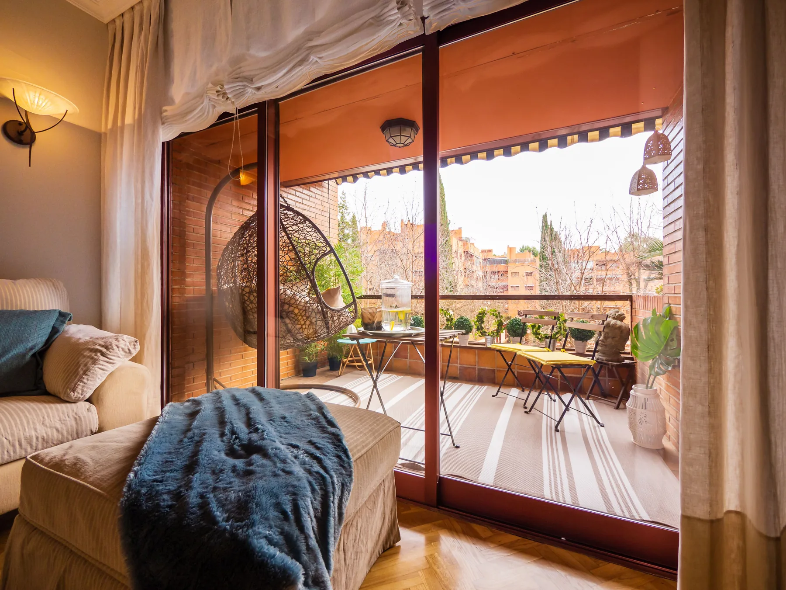

How I ended up here
I moved to Barcelona in 2006 because of my relationship with a Spanish woman. I didn't arrive with a carefully worked-out plan to spend the next twenty years in Spain. Barcelona simply became home. I raised my family here, and I've spent most of my adult life dealing with the city as someone who lives in it rather than someone passing through.
That matters when you're talking about buying a home. Barcelona looks compact on a map, but where you live changes the experience completely. An apartment in Eixample, a house in Sant Just Desvern, a place near the sea in Castelldefels and a second home on the Costa Brava are very different decisions, even though each one can start with someone saying they'd like to buy in Barcelona.
Twenty years here doesn't mean I know every building in the city. It means I've had a long time to understand how Barcelona works day to day: where people actually live, how the neighbourhoods differ once you get past the weekend version of the city, and how much an area can change in a decade.

Before Barcelona
Before moving to Spain, I worked in real estate in California, including in Beverly Hills, and held real-estate licences in California and Florida. Those licences are no longer active, and I'm not a licensed estate agent in Catalonia.
What I did keep is a working knowledge of how property is bought and sold in the United States. American buyers arrive with reasonable expectations based on that system: who represents the buyer, what an agent does, what happens after an offer, what closing is supposed to look like. Some of those assumptions don't carry over neatly to Spain.
Buying here from the U.S.
The questions I hear from American buyers are usually different from the ones a local buyer would ask.
- Who does the estate agent represent?
- Why can the same property appear with several agencies?
- What happens after an offer is accepted?
- What is an arras agreement?
- Why is there a notary?
- What should I know about the building as well as the apartment?
- Can I handle parts of the purchase while I'm still in the U.S.?
None of those are unusual questions. They come from being used to another system. I can explain the practical side and help you work out what to ask. When a question turns into legal, tax or mortgage territory, I put you in front of the professional who should actually answer it.

Where to look
Most people arrive with a rough idea of Barcelona based on places they've stayed or neighbourhood names they've heard: Eixample, Gràcia, Sarrià. Sometimes that first idea is exactly right. Sometimes what someone says they want doesn't match the area they have in mind.
Someone may tell me they want to live in Barcelona and then describe a detached house, a garden, quiet streets and easy parking. That usually means we should also look at the metropolitan area, in places like Sant Just Desvern, not only the city.
Someone else wants a classic Eixample apartment. Then it's a different conversation: the building matters as much as the address. Natural light, noise, the lift, the terrace, communal works, parking and the state of the community deserve as much attention as the floor plan.
For other buyers, Sitges, Castelldefels or the Costa Brava makes more sense than the city. The point of the early conversations is to work that out before anyone spends weekends viewing the wrong properties.
How I work
It usually starts with a call. You tell me roughly what you're looking for, your budget, when you're thinking of buying and what you already know about Barcelona. Some people have a very specific brief. Others just know they want to spend more time here and are starting to think seriously about buying. You don't need to know the neighbourhoods before we speak; that's part of the conversation.
Once I understand what you're after, I work with the licensed local real-estate team on the property side. They handle the formal search, the viewings and the transaction. I stay involved as the person you already know and can call.
If you're still in the U.S., a lot can happen before you get on a plane. We can narrow down areas and properties from a distance, and the local team can arrange viewings and, where it makes sense, look at properties by video. That doesn't replace seeing a home yourself, but it saves wasted trips.
The local team
I'm not a licensed estate agent in Catalonia, so the real-estate work itself is carried out by licensed local professionals I work with. They can search across a wider agency network and deal directly with other agents where needed, so the search follows what you're looking for rather than one office's listings.
And after the search
Finding the property is only part of moving into it. Over twenty years here I've built up a fairly large set of contacts in Barcelona. If you need a lawyer, someone to talk to about financing, renovation work or help getting utilities sorted, I can usually point you towards someone appropriate.
I don't replace those professionals, and I don't give legal, tax, mortgage or financial advice myself. Sometimes the useful part is simply knowing who to call.
Talk to me
If you're seriously considering buying in Barcelona, the easiest place to start is a conversation. You don't need every detail decided. A realistic idea of budget and what you're looking for helps; the rest we can work through.